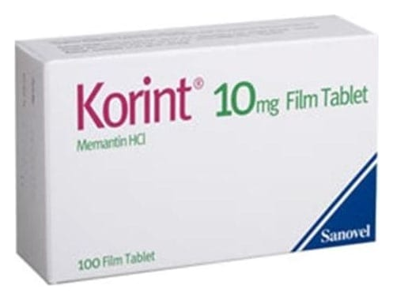

Korint 10 mg Film Tablet, 50 Tablet

Ne için kullanılır
KT · Bölüm 1KORİNT, beyaz renkli, merkeze doğru incelen oblong şeklinde, bikonveks, iki yüzü çentikli | film kaplı tabletlerdir. 28, 50 ve 100 film tabletlik blister ambalajlarda piyasaya sunulmaktadır.
KORİNT, demansa karşı kullanılan ilaçlar grubundadır.
Alzheimer hastalığında görülen hafıza kaybı, beyindeki mesaj sinyallerinin bozulması
nedeniyle ortaya çıkar. Beyinde, NMDA -reseptörü denilen oluşumlar bulunur. Bu oluşumlar, öğrenme ve hatırlama için önem taşıyan sinir uyarısında rol oynarlar. KORİNT, NMDA reseptör antagonistleri denilen bir ilaç grubuna dahildir ve NMDA reseptörleri üzerinde etki göstererek sinir uyarısını ve hafızayı iyileştirir. KORİNT, bu etkisi nedeniyle, orta ve şiddetli | evre Alzheimer hastalığının tedavisinde kullanılır.